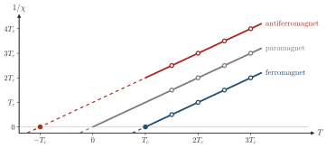
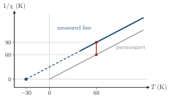

Advanced Quantum Materials 2027 · All lectures · Lecture notes
Session 9. Excitations and Defects in Quantum Materials
9.2 The response of a classical magnet as a first example
Before we use any quantum many-body method, let us see how the response predicts the ground state in a setting that we can solve in closed form. We take a temperature well above any ordering transition, where the system is disordered. Is there a measurement that we can do at that temperature which tells us what kind of order the system will develop when we cool it down? We will now see that the answer is yes. The inverse susceptibility \(1/\chi(T)\) is a straight line, and the temperature where it extrapolates to zero tells a ferromagnet from an antiferromagnet, long before any order appears.
This setting is a classical Ising magnet at finite temperature, treated in mean-field theory, and Section 1.12 gives the mean-field method itself. The relevant response is the magnetic susceptibility, \(\chi = \partial M/\partial H\), which is the linear-response coefficient that relates an applied field \(H\) to the magnetization \(M\) that it induces. If we solve the mean-field Ising model at high temperature, we find three different behaviors, which depend on the sign and the strength of the exchange coupling.
In mean field, the uniform susceptibility of the disordered phase is
\[\chi(T) \;\propto\; \begin{cases} \dfrac{1}{T} & \text{paramagnet (no exchange coupling),} \\[-2pt] & \text{diverges only at } T=0, \\[4pt] \dfrac{1}{T - T_c} & \text{ferromagnet, diverges at a positive } T_c, \\[4pt] \dfrac{1}{T + T_c} & \text{antiferromagnet, apparent divergence} \\[-2pt] & \text{at a negative temperature.} \end{cases} \tag{9.1}\]
The line \(1/\chi(T)\) crosses zero at \(T_c\) for a ferromagnet and at \(-T_c\) for an antiferromagnet, so its intercept gives the sign of the exchange.
The steps From the mean-field Ising model to (9.1)
We take Ising spins \(\sigma_i=\pm1\) with the energy
\[E=-J\sum_{\langle ij\rangle}\sigma_i\sigma_j-h\sum_i\sigma_i,\]
where each bond counts once and \(J>0\) favors parallel spins. We measure \(h\) and \(T\) in the same unit, with \(k_B=1\), and the susceptibility is \(\chi=\partial m/\partial h\) at small \(h\), with \(m=\langle\sigma_i\rangle\). In these units \(1/\chi\) is a temperature.
The simplest case is a free spin, \(J=0\). Its two states have the energies \(\mp h\), so
\[m=\tanh(h/T)\approx h/T,\qquad \chi=1/T,\]
which is the paramagnet of (9.1).
With \(J\neq0\), mean field replaces the \(z\) neighbors of a site by their average moment \(m\). The site then feels the field \(h+zJm\), and
\[m=\tanh\Big(\frac{h+zJm}{T}\Big)\approx\frac{h+zJm}{T}.\]
We solve for \(m\) and get \(m=h/(T-zJ)\), so \(\chi=1/(T-T_c)\) with \(T_c=zJ\), which is the ferromagnet of (9.1). The expansion of \(\tanh\) holds while \(m\) is small, which is the case above \(T_c\) in a small field.
For \(J<0\) on a bipartite lattice, such as the square lattice with \(z=4\), all the neighbors of a site of one sublattice are on the other one. A uniform field gives the same small moment \(m\) on both, so a site feels \(h-z|J|m\), and \(m=h/(T+z|J|)\). This is the antiferromagnet of (9.1), with \(T_c=z|J|\). A staggered field, \(+h\) on one sublattice and \(-h\) on the other, gives opposite moments, and the same steps give \(m=h/(T-z|J|)\) on each sublattice. This staggered response diverges at \(T_c\), which is where the antiferromagnet orders.
Mean field is only an estimate of \(T_c\). On the square lattice it gives \(T_c=4J\), while the exact solution of the Ising model gives \(2.27J\). The intercept is more reliable, since far above \(T_c\) the line \(1/\chi\) of the exact model also extrapolates to zero at \(T=zJ\). In the rest of this page we use the sign of the intercept, and in the problem also its size.

The physical picture behind (9.1) is important, because we will find it again in a fully quantum form in Section 9.5. In the paramagnetic regime the thermal fluctuations dominate, and the susceptibility stays finite at any \(T>0\), since nothing in the system tends to order. In the ferromagnetic case the exchange field of the neighbors reinforces the applied field, so as \(T\to T_c^+\) the system becomes polarized more and more easily, and \(\chi\) really diverges at the transition.
In the antiferromagnetic case the exchange field of the neighbors opposes the applied field, since the exchange favors staggered order and not uniform order, and this appears as the opposite sign in the denominator. The susceptibility then seems to go towards a divergence at a temperature below absolute zero. Of course it never reaches it, but the sign alone already tells us that the system tends to antiferromagnetic order and not to ferromagnetic order.
In experiments this is a practical diagnostic. We plot \(\chi^{-1}(T)\), and if the straight line extrapolates to a positive intercept, the system is close to a ferromagnet, while a negative intercept means that the system is close to an antiferromagnet. All of this is measured in the disordered phase at high temperature. This is the model for the whole session. The response of the disordered and uniform state, computed without ever solving for the ordered state itself, already contains the information about which ordered state is coming.
The susceptibility is a thermodynamic measurement, and the temperature \(\theta\) where its line \(1/\chi(T)\) extrapolates to zero is what is called the Curie-Weiss temperature. In ZnCu\(_3\)(OH)\(_6\)Cl\(_2\), a kagome lattice antiferromagnet with spin \(S=1/2\), the susceptibility gives a Curie-Weiss temperature of about \(-300\) K, and no magnetic order is observed down to \(50\) mK. The measurement is in this article. In our reading the negative sign is the antiferromagnetic line of (9.1), and on a bipartite lattice mean field would then give order at \(T_c=|\theta|\). In our reading the kagome lattice, which is built from triangles and is not bipartite, is frustrated as in Section 8.4, and this is what keeps the compound from ordering. Mean field and (9.1) cannot tell us this.
We measure \(\chi\) of an Ising magnet on a square lattice at high temperature. The straight line
\[\frac{1}{\chi}\propto T-\theta\]
extrapolates to zero at \(\theta=-30\) K. What do we expect when we cool the sample?

Show the answers
- A. ✗ False
This is false. For a ferromagnet with \(T_c=+30\) K the line \(1/\chi\propto T-30\) reaches zero at \(30\) K, and \(\chi\) diverges there. Our line reaches zero only at \(-30\) K, so it never does at a positive temperature.
- B. ✓ True
This is true. The line \(1/\chi\propto T+30\) has the antiferromagnetic form of (9.1). The exchange favors staggered order, and a uniform field does not couple to this order. So the uniform \(\chi\) does not diverge for \(T>0\), and the exchange only makes it smaller than the \(\chi\) of a free spin. The order needs a lattice without frustration, such as the square lattice. On the kagome lattice a negative intercept can come with no order at all.
\[\chi(T) \;\propto\; \begin{cases} \dfrac{1}{T} & \text{paramagnet (no exchange coupling),} \\[-2pt] & \text{diverges only at } T=0, \\[4pt] \dfrac{1}{T - T_c} & \text{ferromagnet, diverges at a positive } T_c, \\[4pt] \dfrac{1}{T + T_c} & \text{antiferromagnet, apparent divergence} \\[-2pt] & \text{at a negative temperature.} \end{cases} \tag{9.1}\]
- C. ✗ False
This is false. A paramagnet has \(1/\chi\propto T\), which is \(60\) at \(T=60\) K. Our line gives \(90\) there, so the intercept at \(-30\) K is a measured deviation and it signals a finite exchange.
Each line is \(1/\chi(T)\) of one sample. The dashed part is an extrapolation. Which sample orders as a ferromagnet?
Show the answers
- A. ✗ False
This is false. The line goes through the origin, \(1/\chi\propto T\), which is a paramagnet with no exchange. Its \(\chi\) diverges only at \(T=0\), so it does not order at any positive temperature.
- B. ✓ True
This is true. The line reaches zero at \(T=30\) K, which is the \(T_c\) of \(1/\chi\propto T-T_c\). There \(\chi\) diverges, and below it the sample is a ferromagnet.
- C. ✗ False
This is false. The line reaches zero only at \(-30\) K, so \(\chi\) stays finite at every \(T>0\). The negative intercept means an antiferromagnetic exchange.
The three lines have the same slope, so they differ only in their intercept, and the sign of the intercept is the sign of the exchange.
A bipartite antiferromagnet orders at \(T_c\) in mean field. How does its uniform \(\chi\) depend on \(T\) above \(T_c\)?
Show the answers
- A. ✗ False
This is false. This is the ferromagnet, which diverges at \(T_c\). For the antiferromagnet at \(T=1.5\,T_c\) the self-consistent mean field gives \(1/\chi=2.5\,T_c\), and not \(0.5\,T_c\).
- B. ✗ False
This is false. This is a free spin with no exchange. At \(T=3T_c\) it gives \(1/\chi=3T_c\), while the antiferromagnet gives \(4T_c\), so the exchange makes \(\chi\) smaller.
- C. ✓ True
This is true. A uniform field gives the same moment \(m\) to both sublattices, and the exchange with the neighbors opposes the field, so a site feels \(h-T_cm\). Then \(m=h/(T+T_c)\), and at \(T=3T_c\) the self-consistent mean field gives \(1/\chi=4T_c\).
The susceptibilities are in the units of the steps above, where a free spin has \(\chi=1/T\).
A fit of the susceptibility of a magnet at high temperature gives \(1/\chi=(T-\theta)/C\). It passes through \(1/\chi=90\) at \(T=60\) K and \(1/\chi=120\) at \(T=90\) K, with \(1/\chi\) in kelvin as in the steps above, where a free spin has \(C=1\). Find \(C\) and \(\theta\), say which order is coming, and find \(|J|\) for a square lattice, \(z=4\).
Solution
The slope of the line is \(1/C=(120-90)/(90-60)=1\), so \(C=1\), the value of a free spin. The first point then gives \(90=60-\theta\), so \(\theta=-30\) K. The intercept is negative, so the exchange is antiferromagnetic, and the order that is coming is a Néel state.
The steps above give \(1/\chi=T+z|J|\) for the antiferromagnet, so \(z|J|=30\) K and \(|J|=30/4=7.5\) K. Mean field puts the order at \(T_c=z|J|=30\) K. The exact solution of the Ising model on the square lattice puts it at \(2.27|J|\), which is \(17\) K. So mean field gives the sign of the exchange and the scale of \(T_c\), but not its precise value. For a real magnet this value of \(|J|\) holds when the data are taken far above \(|\theta|\), since closer to \(|\theta|\) the line bends.
This is how a measurement far above any order gives the sign and the size of the exchange, and so which ordered state is coming.